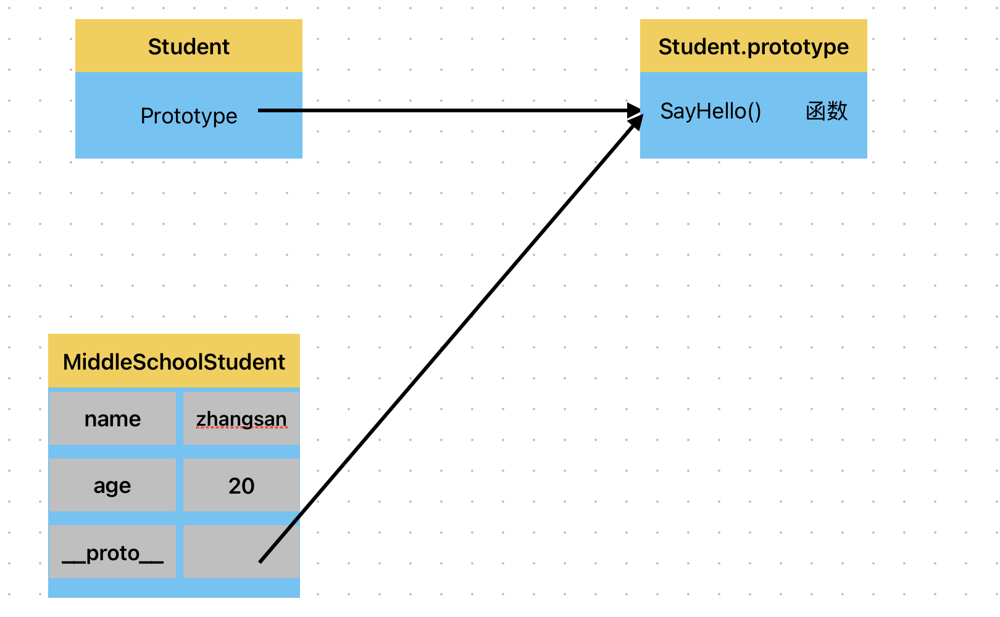
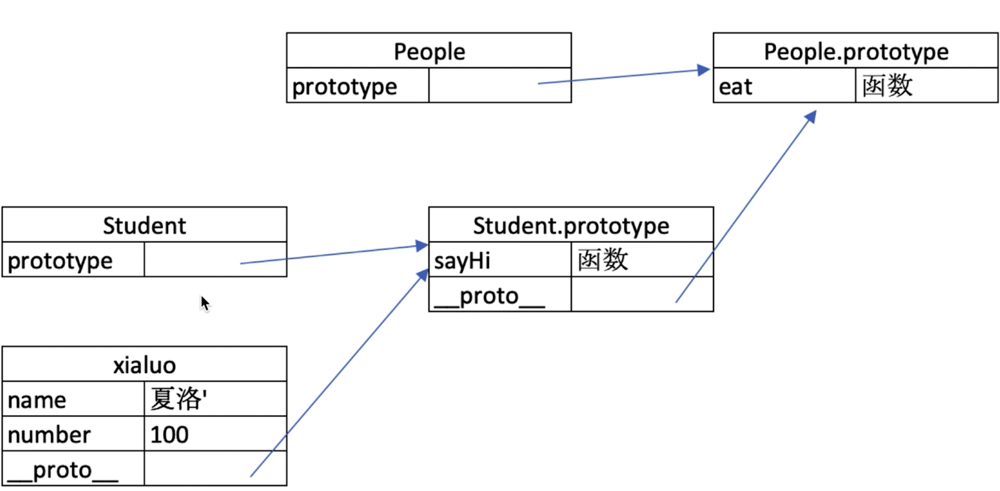
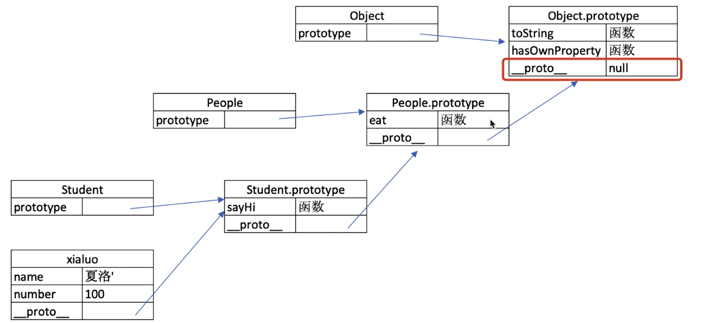

一、变量类型和计算
1. typeof 能判断哪些类型
1). 作用
- 判断所有值类型
// 判断所有值类型
let a;
typeof a; // 'undefined'
const str = "abc";
typeof str; // 'string'
const n = 100;
typeof n; // 'number’
const b = true;
typeof b; // 'boolean'
const s = Symbol("s");
typeof s; // 'symbol'
- 识别函数
// 能判断函数
typeof console.log // 'function'
typeof function () {}. // 'function'
- 判断是否是引用类型
// 能识别引用类型（不能再继续识别）
typeof null // 'object'
typeof l'a', 'b'] // 'object'
typeof { x: 100 } // 'object'
2. 值类型和引用类型
1). 值类型
let a = 50;
let b = a;
a = 100;
console.log(b); // 50
2). 引用类型
let a = { name: "wg" };
let b = a;
b.name = "zhangsan";
onsole.log(a.name); // zhangsan
3). 分类
// 值类型
undefine 字符串 数值 布尔 Symol
// 引用类型
obecjt{} 数组[] null
3. 深拷贝
function deepCopy(obj) {
// 如果传入的不是对象或者是 null，则直接返回
if (typeof obj !== "object" || obj === null) {
return obj;
}
let result;
// 处理数组
if (Array.isArray(obj)) {
result = [];
for (let i = 0; i < obj.length; i++) {
result[i] = deepCopy(obj[i]);
}
} else {
// 处理普通对象
result = {};
for (let key in obj) {
if (obj.hasOwnProperty(key)) {
result[key] = deepCopy(obj[key]);
}
}
}
return result;
}
// 示例使用
const original = {
a: 1,
b: [2, 3],
c: { d: 4 },
};
const copied = deepCopy(original);
console.log(copied);
copied.b.push(5);
console.log(original.b); // 输出: [2, 3]
console.log(copied.b); // 输出: [2, 3, 5]
二、原型和原型链
1. class 和继承
class 使用 constructor 构建，示例：
class Student {
constructor(name, age) {
this.name = name;
this.age = age;
}
SayHello() {
console.log(`你好，我叫 ${this.name},今年${this.age}岁了`);
}
}
let student = new Student("zhangsan", 18);
student.SayHello();
继承，使用 extends 关键字来完成继承，super 来执行父类的构造函数，示例：
class Student {
constructor(name, age) {
this.name = name;
this.age = age;
}
SayHello() {
console.log(`你好，我叫 ${this.name},今年${this.age}岁了`);
}
}
// 继承
class MiddleSchoolStudent extends Student {
constructor(name, age, task) {
super(name, age);
this.task = task;
}
CompleteTask() {
console.log(`${this.name}完成了${this.task}任务`);
}
}
let middleSchoolStudent = new MiddleSchoolStudent("zhangsan", 20, "英语听力");
middleSchoolStudent.SayHello(); // 你好，我叫 zhangsan,今年20岁了
middleSchoolStudent.CompleteTask(); // zhangsan完成了英语听力任务
2. 类型判断 instanceof
MiddleSchoolStudent instanceof Student // true
Student instanceof Object // true
[] instanceof Array // true
[] instanceof Object // true
{} instanceof Object // true
3. 原型和原型链
1). 原型
// class 实际上是函数，是个语法糖
typeof Student; // function
typeof MiddleSchoolStudent; // function
// 隐式原型__porto__和显式原型prototype
console.log(MiddleSchoolStudent.__proto__);
console.log(Student.prototype);
console.log(MiddleSchoolStudent.__proto__ === Student.prototype);

-
每个 class 都有显式原型
prototype -
每个实例都有隐式原型
__proto__ -
实例的隐式原型
__proto__指向 class 的显式原型prototype -
MiddleSchoolStudent 获取属性 name 或执行 SayHello()方法时，现在自身属性和方法寻找，如果找不到就到
__proto__中去查找

- MiddleSchoolStudent.hasOwnProperty(’name’) // true
- MiddleSchoolStudent.hasOwnProperty(‘SayHello’) // false

- Instancesof 比如 MiddleSchoolStudent instanceof Student，会沿着上述链条寻找
三、作用域和闭包
1. this 的不同应用场景，如何取值
this 取什么值，是在函数执行时确定的，不是在函数定义的时候确定的
1). 作为普通函数
function fn() {
console.log(this);
}
fn(); // this 是 window
2). 使用 call、apply、bind
// call 是函数对象的一个方法，其用途是改变函数内部 this 的指向，同时能在调用函数时传入参数
function fn() {
console.log(this);
}
fn.call({ x: 100 });
// this 是 {x:100}
// bind() 是函数对象的一个方法，它主要用于创建一个新的函数，在调用时这个新函数的 this 值会被绑定到指定的对象上，并且可以预设一些参数
const fn1 = fn.bind({ x: 200 });
fn1();
// this 是 {x:200}
3). 作为对象方法被调用
const zhangsan = {
name: "张三",
sayHello() {
console.log(this); // 这里的this指向当前对象
},
wait() {
setTimeout(function () {
console.log(this); // this === window,这个this是被setTimeout触发执行，所以指向setTimeout，而不是wait触发
});
},
};
4). 箭头函数
const zhangsan = {
name: "张三",
sayHello() {
console.log(this); // 这里的this指向当前对象
},
wait() {
setTimeout(() => {
console.log(this); // this即当前对象，箭头函数被setTimeout触发，但是箭头函数的this取得是箭头函数的上级作用域的this,就是wait()
});
},
};
5). 在 class 方法中被调用
class Student{
constructor(name,age) {
this.name = name;
this.age = age;
}
SayHello(){
console.log(this)
}
}
const zhangsan = New Student("张三",18)
zhangsan.SayHello() // this指向zhangsan对象
2. 手写 bind 函数
Function.prototype.myBind = function (thisArg, ...args) {
const self = this;
return function (...newArgs) {
const allArgs = [...args, ...newArgs];
return self.apply(thisArg, allArgs);
};
};
// 测试代码
function greet(message) {
console.log(`${message}, ${this.name}`);
}
const person = { name: "John" };
const boundGreet = greet.myBind(person, "Hello");
boundGreet();
3. 实际开发中闭包的应用场景，举例说明
第一种情况：
函数作为返回值
function create() {
const a = 100;
return function () {
console.log(a);
};
}
const fn = create();
const a = 200;
fn(); // 输出：100
console.log 中的 a 叫做自由变量，没有被赋值，它会在自己定义的位置向上级作用域查找，不是执行的地方，比如上述例子中，console.log
中的 a 定义在 create()函数中，它会向上查找，找到 const a=100 自己就赋值为 100
第二种情况：
函数作为参数
function print(fn) {
const a = 200;
fn();
}
const a = 100;
function fn() {
console.log(a);
}
print(fn); // 输出：100
console.log 中的 a 为自由变量，在自己定义的作用域中向上级作用域查找，不是执行的地方，最近的是 const a =100 所以输出 100